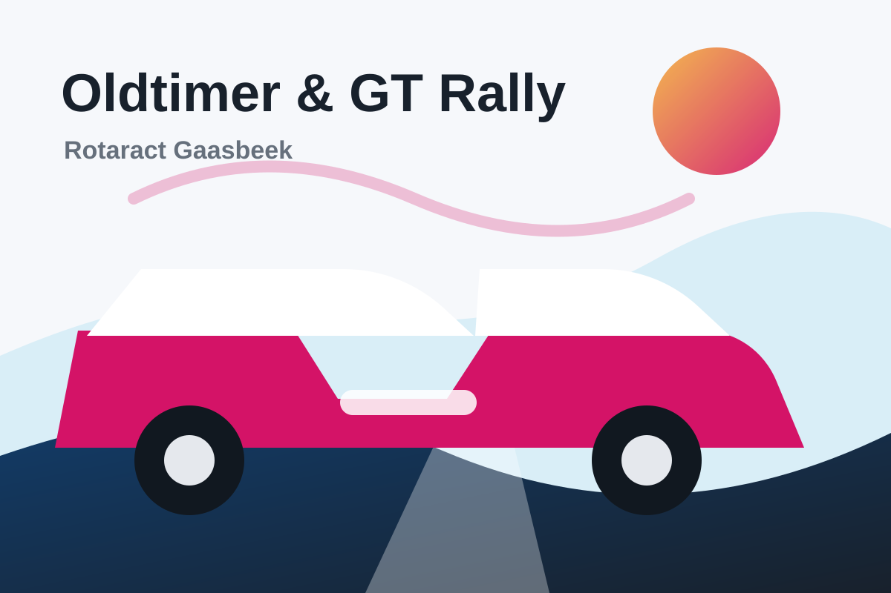
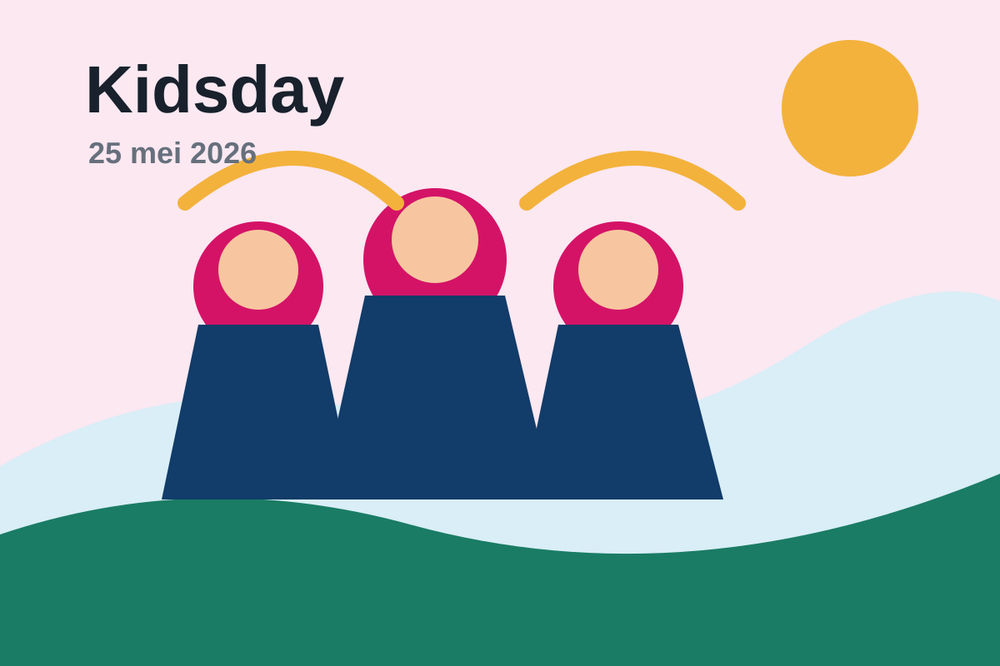

Oldtimer & GT Rally
Op 6 september organiseren we een rally voor liefhebbers van oldtimers en GT-wagens.

Service above self in het Pajottenland
Wij zijn een jonge club van doeners die vriendschap, professionele groei en maatschappelijke impact samenbrengen in en rond Gaasbeek.
Wie we zijn
Rotaract Gaasbeek Pajottenland is er voor jonge volwassenen die graag iets opbouwen: projecten voor de buurt, maandelijkse clubavonden, teambuildings en acties waarvan de opbrengst terugvloeit naar zinvolle doelen.


Wat we doen
Van een oldtimer/GT rally tot openluchtcinema, Kidsday, taxi service en Kerstcorrida: elk event is een kans om mensen te verbinden en tegelijk middelen te verzamelen voor projecten die ertoe doen.

Op 6 september organiseren we een rally voor liefhebbers van oldtimers en GT-wagens.

Een nieuw zomerevent in voorbereiding. De exacte datum wordt nog bevestigd.

Op 25 mei 2026 beleven we een toffe feestdag met kinderen die opgroeien in kwetsbare omstandigheden.

Voor de jaarlijkse Rotary-bijeenkomst hielpen we bezoekers veilig van en naar hun bestemming.

Een sfeervol wintermoment waar we als club aanwezig waren met een warme stand.
Een actie uit najaar 2025.
Stuur ons een bericht en kom kennismaken op een clubavond of event.